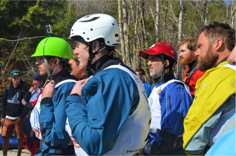
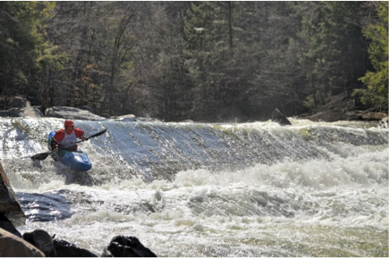
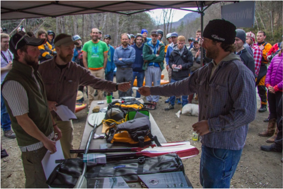
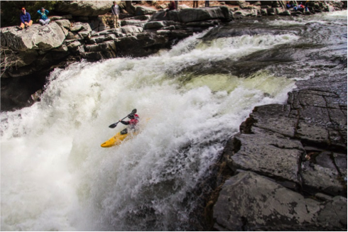
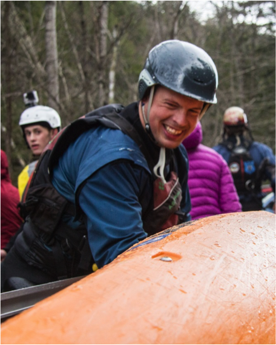

New Haven Race 2015 Writeup
By Ryan McCall
I’ve had close to 3 weeks to reflect on the New Haven Ledges Race. What is it about the Ledges Race that keeps bringing boaters back year after year to compete? What is it about this race that draws in new competitors every year? Why does the buzz about this event amongst local Vermonter boaters start up while our beloved New Haven Ledges is under feet of snow and ice? Why do friends and acquaintances, who don’t even boat, start to ask me when the Ledges Race will take place even before there are regular glimpses of whitewater boats on car roofs zipping around the Vermont countryside? These questions and more have been rattling around in my head for close to 3 weeks….
We have been putting this event on for 7 years. Yes, 7 years! I remember the first year the race took place in 2009. I was asked by the race organizers Ben Guttridge and Dave Packie, if I’d be willing to head over to the Ledges to help out with safety for a grass roots creek race on the Ledges. They figured a few UVM kids and maybe folks who lived near the Ledges would show up for a chance at bragging rights as having the fastest time down the stretch of river. Those two guys were dead on right. What they didn’t figure was a lot more people wanted to test their mettle on the Ledges than they expected.
Not a whole lot has changed. We’ve mucked around with the format a few times, made it more spectator friendly, and tried to make it more of a corporate sort of event with big money prizes and signature sponsors. We’ve even had a full shift in the primary organizing club, moving from the University of Vermont Kayak Club to it’s now being under the guise of the Vermont Paddlers Club.

What hasn’t changed with this event; however, is the very reason for it…the boaters! Yes, the folks who come out to race each year. Shocker, right? I can name each and every one of them by their first name. I’ve boated with most of them, whether they are from VT, NY, NH, ME, MA, or as far south as PA and north as QC. These boaters get together on a day in April to hang out with friends and boat laps on the New Haven Ledges. Some of the boaters actually go fast. Some of them try to go fast. Others aren’t even trying to race, they are just spending time amongst it.
The Ledges section of the New Haven River really lends itself to an event like this too. There are six high quality rapids (Roadside, Secret Compartment, The Ledges, Oh By The Way, Rooster Tail and Toaster) that rate out between class 4 and 5 with lots of 3+ high quality boogie in between to keep things interesting. Also keeping the racers on their toes are the annual changes of the New Haven’s bed formation. The crux of the run can be Rooster Tail one year, while the next it is Oh By The Way, or Secret Compartment. Levels on the river the day of the race also play into the times the participants get for their two race laps. As we all know, there are a few boaters out there who thrive in ELF conditions. Of course there are big water guys (and gals) who really like the run juiced up.
This year we had a level that was about as good as it gets to keep boaters from both camps happy, with a forgiving, but fluid, level. We were at the front end of the snow melt and had not seen any rain on snow events to really get the melt started. But we were graced with a week of temps in the 70s, resulting in the level being up around 1000 cfs the Friday before the race... It cooled off that night to drop the level in to the 600 cfs range. With race day in the 60s, plenty of sunshine, and the snow on Mt Abe above Lincoln, VT giving us just enough melt to keep our levels steady in the 600cfs range, things were…. PERFECT. Perfect for the spectators too. They had lots of great opportunity to find a spot, soak in the sun, and catch great racing action and even some pretty good carnage.
Over all, the race went off without a hitch. Without a hitch to a race coordinator is considerably different than what a participant would say, but I think I can cover both bases here. The weather was brilliant, the flow was perfect, we had no incidents or accidents to report, and I think everyone had a good time.
One of those things that goes into a top notch event is the sponsorship. It really puts the icing on the cake. Most of our sponsors have been with us for years and without them the Ledges Race is really just another day on the river for the boaters… Like I said, our racers come to this event for the low key grass roots atmosphere, but they also all come hoping to win the chance at a prize or at the very least smoke their regular paddling partner’s time. So more than just touting our sponsors’ products, I really want to say they help our event to be success and to build the VT boating community. We did something different with our sponsorship this year, pooling our local VT sponsors and asked for cash support in order to provide race bibs for our event. Without the generosity of the Vermont Paddlers Club, Otter Creek Brewing, and IBEX we’d still be using a grease pencil to write the race numbers on the racer’s boats. A big thank you to these sponsors for funding our bibs and adding a level of legitimacy to the race. Our prize sponsors this year looked a lot like they have in the past and we really thank them for their loyalty to VT’s spring classic. Our perennial sponsors have been keeping us going for years with fantastic products. – Thank you to ShredReady, Mountain Khaki, Liquid Logic Kayaks, Werner Paddles, Astral Buoyancy, and Five Ten. They were all as generous as ever! New to our list of sponsors was Stohlquist, Dublin Dog, and Watershed Dry Bags. It was fantastic to have these new sponsors at the table and the racers were really stoked with the prizes we had from them. THANKS to all of our sponsors – you all keep us honest and the racers paddling harder!
The winners… everyone was a winner on April 18th! However those who paddled the fastest were, in this order,… Justin Beckwith, pushing the elusive sub 4 minute time, came in at 4:04. His 3rd overall win in the 7 years the race has been held. The Brown brothers pulled 2nd and 3rd. Rogan in at 4:11 and Culley at 4:13 (nothing like some family competition). For the women, budding creeker Catharine Hull smoked in a time of 5:32.
Back to the questions I posed at the beginning of this year’s race wrap up… I’m not going to answer those for you here. Come talk to me on the river or better yet, come see me next April in Bristol, VT where I’ll be saying 1, 2, 3…..GO, sending 50 of my best friends down the start ramp and on their way down the New Haven Ledges and off Toaster. You’ll see it for yourself……
Pictures provided by Eric Adsit and Kristen Vickers. For video coverage of the event follow this link.